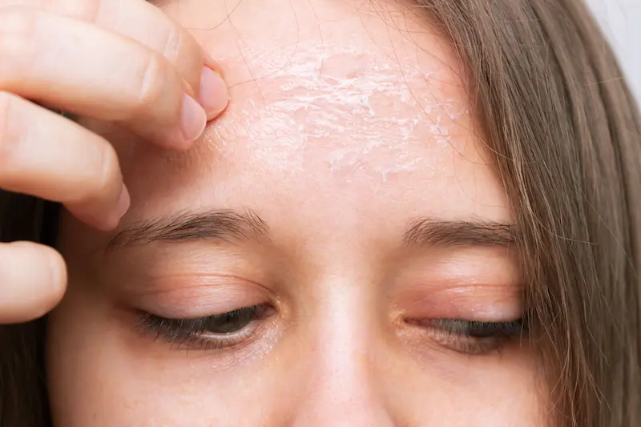
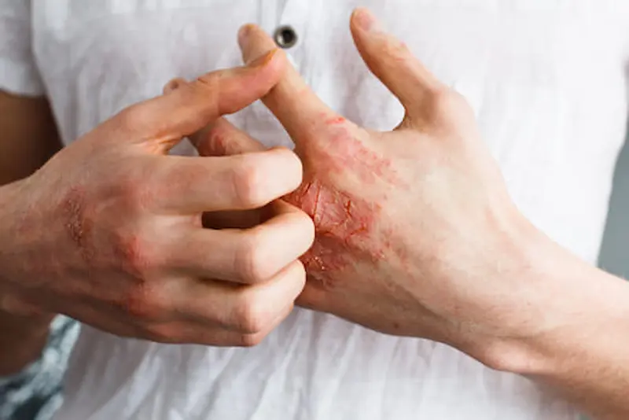
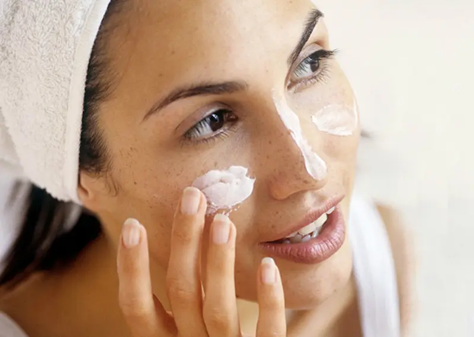
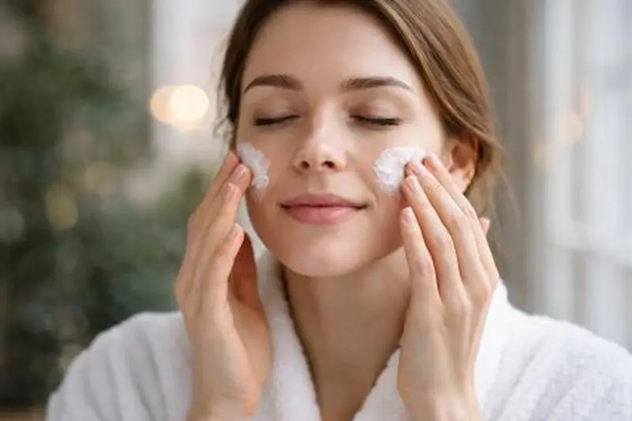
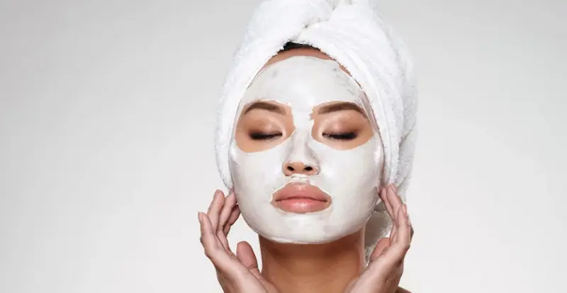
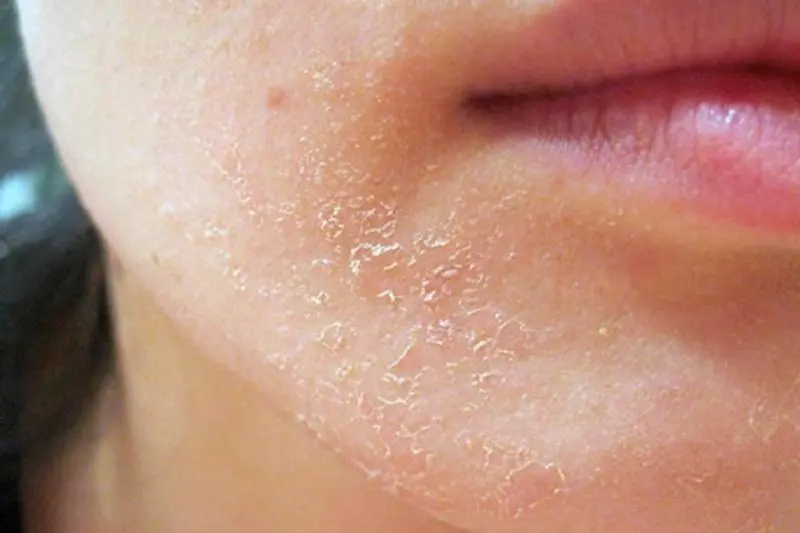
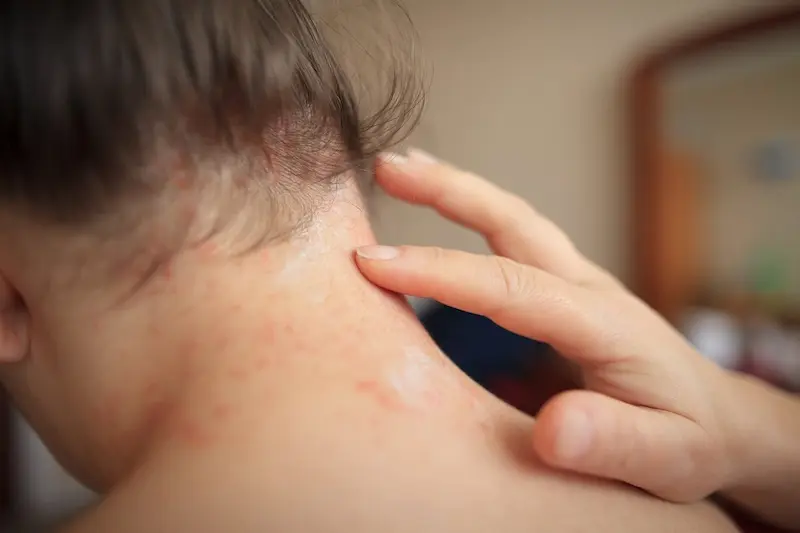

Ingredient esențial pentru menținerea hidratării profunde a pielii
Ingredient esențial pentru menținerea hidratării profunde a pielii
Ce este pielea predispusă la eczemă?
Pielea predispusă la eczemă este un tip de piele sensibilă, al cărei barieră de protecție funcționează mai puțin eficient. Din această cauză, pielea pierde mai rapid umiditatea, devine uscată, iritată și poate reacționa cu inflamații chiar și la factori externi obișnuiți.
Eczema se manifestă prin roșeață, descuamare și mâncărime. Uneori pot apărea mici fisuri, zone inflamate sau o sensibilitate crescută la produse cosmetice și la substanțele chimice casnice. În climatul Moldovei, starea pielii se poate agrava iarna din cauza aerului uscat, vântului și variațiilor bruște de temperatură între exterior și interior.
Este important să înțelegem că pielea predispusă la eczemă necesită o îngrijire deosebit de blândă. Produsele de curățare nepotrivite, scruburile agresive sau cosmeticele cu un conținut ridicat de parfumuri pot intensifica iritația și pot declanșa pusee.


De ce apare eczema: afectarea barierei de protecție a pielii
Principala cauză a apariției eczemei este slăbirea barierei de protecție a pielii. În mod normal, stratul superior al epidermului reține umezeala și protejează organismul împotriva bacteriilor, alergenilor și substanțelor iritante. Când această barieră este afectată, pielea pierde mai repede apă și devine mai vulnerabilă la factorii externi.
Printre cele mai frecvente cauze ale puseelor se numără aerul uscat, contactul cu produse de curățare agresive, stresul, reacțiile alergice și predispoziția genetică. Multe persoane mai reacționează și la țesături sintetice, apă dură sau cosmetice cu conținut ridicat de alcool și parfumuri.
În condițiile climatului urban din Chișinău, situația poate fi agravată de poluarea aerului și praful. Acești factori se depun pe suprafața pielii, perturbă echilibrul acesteia și intensifică reacțiile inflamatorii, provocând uscăciune, mâncărime și senzația de strângere.
Principalele reguli de îngrijire a pielii predispuse la eczemă
Ingrediente utile pentru pielea predispusă la eczemă
| Ingredient | Acțiune pentru pielea cu eczemă |
|---|---|
| Pantenol (Provitamina B5) | Calmează pielea iritată, reduce roșeața și accelerează refacerea barierei cutanate deteriorate. |
| Ceramide | Restabilesc stratul lipidic al pielii și ajută la menținerea umezelii, reducând uscăciunea și sensibilitatea pielii. |
| Ovăz coloidal | Are un efect calmant pronunțat, reduce mâncărimea și inflamația, fiind frecvent utilizat în produse pentru piele sensibilă și atopică. |
| Squalan | Înmoaie pielea, întărește bariera de protecție și ajută la prevenirea pierderii de umiditate. |

Greșeli care pot agrava starea pielii predispuse la eczemă
Cum să menții sănătatea pielii predispuse la eczemă
Îngrijirea pielii predispuse la eczemă trebuie să fie concentrată în primul rând pe refacerea barierei de protecție și menținerea unui nivel optim de hidratare. Produsele corect alese ajută la reducerea uscăciunii, diminuarea mâncărimii și fac pielea mai puțin sensibilă la factorii iritanți externi.
Baza îngrijirii include curățarea delicată, hidratarea regulată și utilizarea produselor cu ingrediente calmante. Cremele cu ceramide, pantenol, squalan sau ovăz coloidal ajută la întărirea barierei pielii și reduc riscul de recidivă. În climatul din Moldova, este deosebit de important să protejezi pielea iarna de vântul rece și aerul uscat, iar vara — împotriva deshidratării și expunerii la soare.
Protocolul de îngrijire a pielii predispuse la eczemă: Dimineața vs Seara
Pentru a minimiza inflamațiile și mâncărimea, este important să împărțim rutina în două faze: hidratare și protecție pe timpul zilei și refacere și calmare seara.
| Momentul zilei | Etapa îngrijirii | De ce este important? |
|---|---|---|
| Dimineața | Cremă ușoară hidratantă + SPF 30–50 | Creează o barieră împotriva razelor UV și a factorilor iritanți externi, prevenind deshidratarea. |
| Seara | Cremă cu ceramide / pantenol | Refacerea stratului protector al pielii, reducerea inflamației și mâncărimii după zi. |
| Îngrijire zilnică | Produse emoliente, uleiuri pentru pielea cu eczemă | Mențin echilibrul hidrolipidic și reduc iritațiile. |
| Îngrijire SOS | Măști calmante / balsam cu ovăz | Refacere intensivă în caz de exacerbare și sensibilitate crescută a pielii. |
Sfat pentru Moldova: În condiții de aer uscat iarna și temperaturi ridicate vara, este esențial să protejați pielea cu eczemă de deshidratare și raze UV. Folosiți creme cu filtre fizice (oxid de zinc, dioxid de titan), care irită minim pielea și oferă protecție stabilă.


Influența mediului urban asupra pielii predispuse la eczemă
În condițiile din Chișinău și alte orașe din Moldova, combinația de praf, smog și radiații UV puternice crește riscul de exacerbări. Particulele de poluare se depun pe piele și pot provoca microinflamații, accentuând uscăciunea și iritația.
Este important să acordați o atenție specială curățării de seară: un ulei hidrofil delicat sau un balsam de curățare + cremă calmantă cu antioxidanți vor ajuta la reducerea inflamației, refacerea barierei de protecție și diminuarea senzației de mâncărime.
Simptomele pielii predispuse la eczemă


Factori care pot provoca exacerbarea eczemei
Principiile de bază pentru prevenirea exacerbarilor
Pentru pielea predispusă la eczemă, este important să respectați o rutină zilnică și delicată: hidratare, protecție împotriva soarelui și a factorilor iritanți, menținerea funcției de barieră a epidermului. Folosiți produse hipoalergenice, fără parfumuri și acizi agresivi, preferând produse cu ceramide, pantenol, uleiuri din ovăz sau unt de shea.
De asemenea, este util să țineți un jurnal al exacerbarilor: notați factorii care provoacă iritații și ajustați stilul de viață și îngrijirea pielii în funcție de observațiile făcute.
Întrebări frecvente despre pielea predispusă la eczemă
Ce cauzează eczemă pe piele?
Eczema apare dintr-o combinație de predispoziție genetică, afectarea barierei de protecție a pielii și factori externi precum stresul, aerul uscat, frigul, detergenții agresivi sau alergenii.
Cum să îngrijești pielea predispusă la eczemă?
Îngrijirea de bază include curățare delicată fără ingrediente agresive, hidratare regulată cu emolienți și protejarea pielii de factorii iritanți. Este important să folosești produse hipoalergenice, fără parfum.
Se poate folosi cosmetică dacă ai eczemă?
Da, dar este recomandat să alegi produse pentru piele sensibilă, fără alcool, parfumuri și cu un număr minim de ingrediente active. Este de preferat să alegi produse dermatologice.
Ce ingrediente sunt benefice pentru eczemă?
Ceramidele, pantenolul, squalanul, ovăzul coloidal și niacinamida ajută la refacerea barierei pielii, reduc mâncărimea și inflamația.
Ce trebuie evitat în cazul eczemei?
Evită produsele de curățare agresive, apa fierbinte, exfolierea frecventă, cosmeticele cu alcool și parfumuri puternice. De asemenea, este important să reduci stresul și contactul cu substanțe chimice.
Este necesar să consulți un medic?
În caz de mâncărime severă, roșeață, crăpături sau episoade frecvente, este recomandat să consulți un dermatolog pentru tratament adecvat.
Cum influențează clima din Moldova pielea cu eczemă?
Iarna, aerul uscat și frigul accentuează uscăciunea pielii, iar vara căldura și radiațiile UV pot duce la deshidratare. Este important să adaptezi rutina de îngrijire în funcție de sezon.